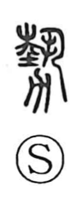

勢

Uncategorized
Kun: ikioi | On: sei, zei
force ・ power ・ momentum ・ course of events ・ state
Explanation
勢 is a compound graph that brings together 執 and 力. Shirakawa reads 執 here as the older form behind 藝(芸), depicting both hands planting a young tree firmly into the earth. The 力 element represents a spade-like tool (suki). Combined, the character pictures the cultivation and planting of a sapling with a spade. From this scene it comes to express the vigor a tree gains when it is deeply planted and well tended—the creative, life-generating power that wells up from within. By extension, 勢 names palpable force and momentum, and further broadens to the course of events and the overall state of affairs.